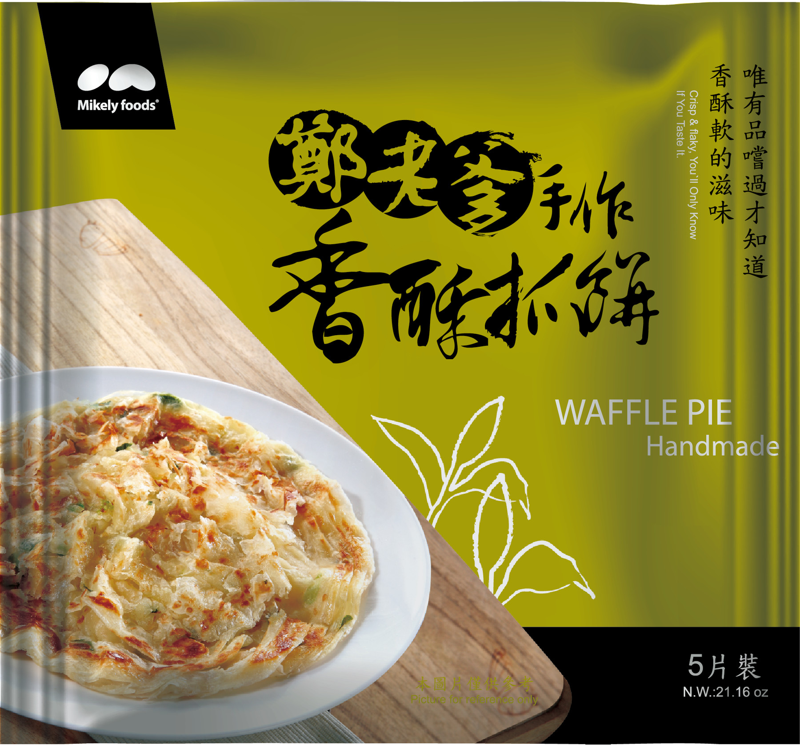
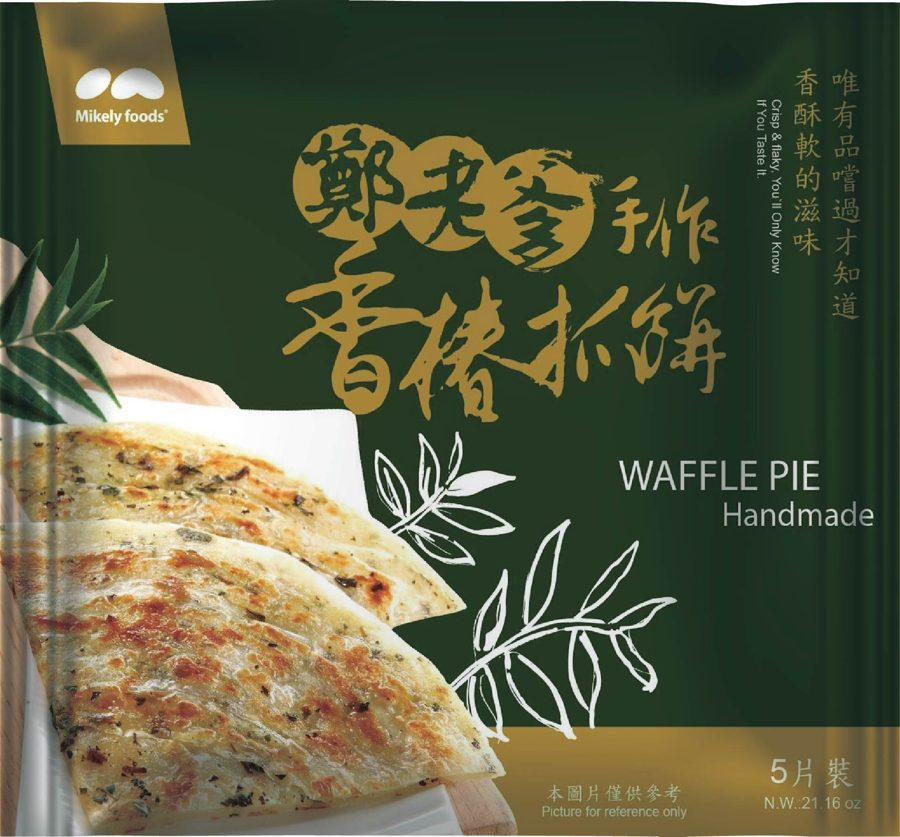
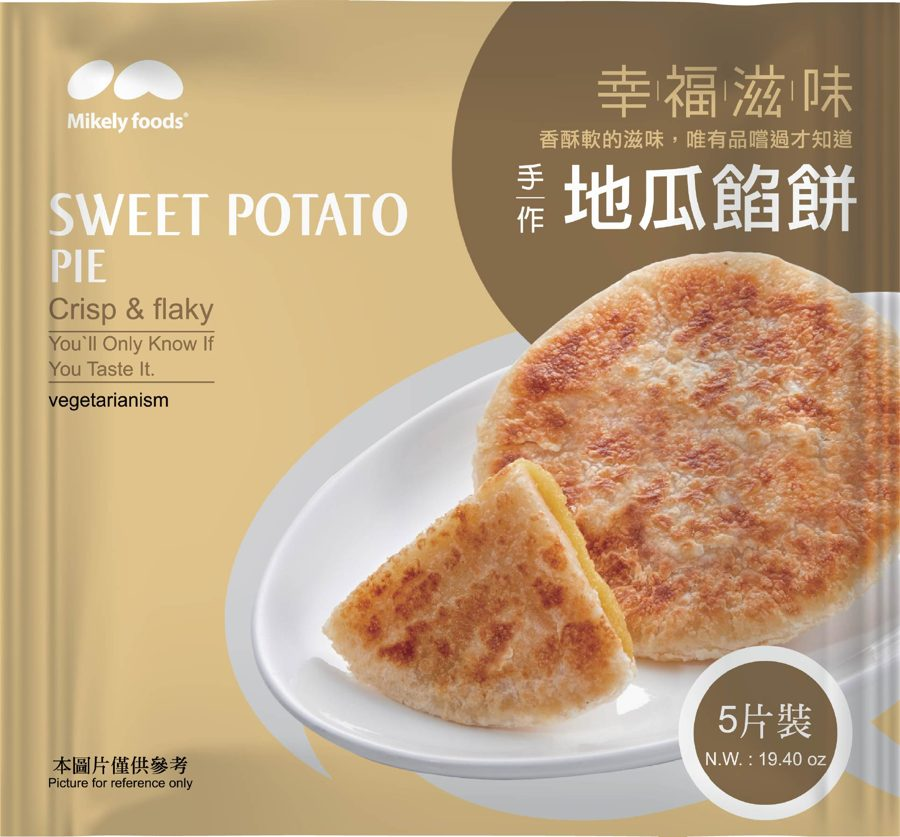
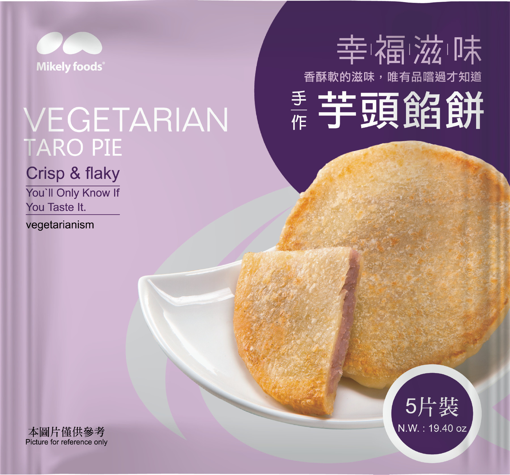
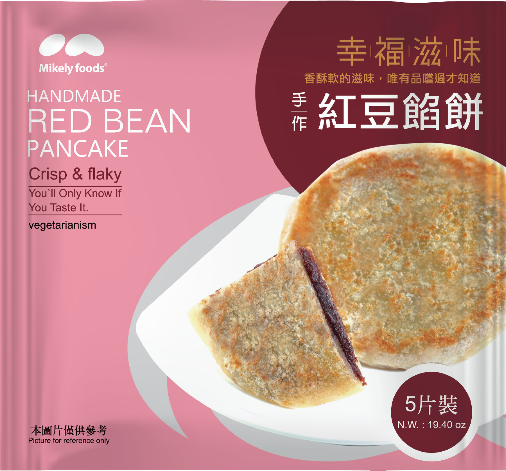

정노야 수제 총좌빙・행복자미 파이
손으로 밀어 만들고 인공색소 무첨가, SQF 인증 밀가루 사용. ISO 22000・HACCP 인증. 냉동 상태 그대로 굽습니다.
정노야 수제
겉은 바삭, 속은 촉촉

파 총좌빙(香酥抓餅)
대만 파의 명산지 윈린 시뤄산 신선한 파를 사용합니다.

참죽 총좌빙(香椿抓餅)
타이중 소농이 기르고 햇볕에 말린 참죽 잎을 사용합니다.
실속 시리즈 (1400g／10장)
행복자미 파이
대만 농산물을 듬뿍 담아

고구마 파이
대농 57호 고구마, 자연스러운 단맛과 황금빛 속살.

타로 파이
다자산 빈랑심 타로, 부드러운 식감과 진한 향.

팥 파이
핑둥 완단산 팥, 알이 굵고 향이 진합니다.
기타 맛 (550g／5개)
팥 치즈・타로 치즈・고구마 치즈・철관음 흑두 앙금・일월담 홍옥 홍차